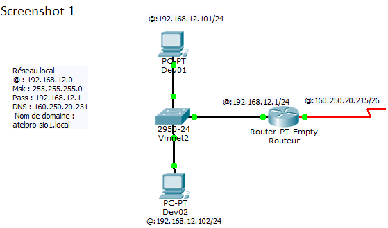
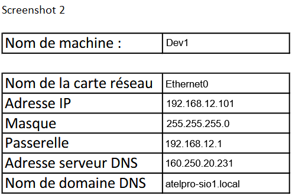
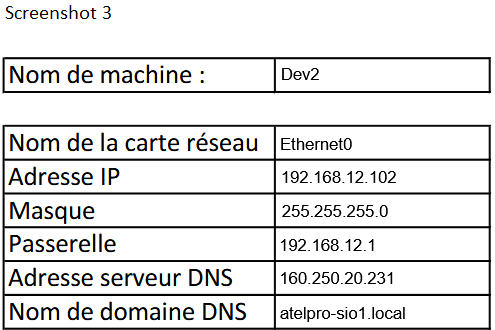
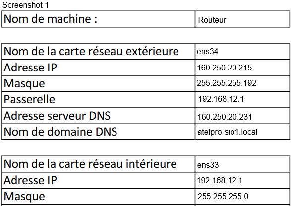

Projet BTS SIO
Infrastructure réseau
Le projet vise à créer un réseau dédié permettant aux développeurs de travailler sur leurs sites web et de partager facilement leurs données, tout en restant indépendants les uns des autres
Présentation
Le projet consiste à mettre en place une plateforme de développement web destinée aux programmeurs d’une SSII, afin de leur fournir un environnement de travail adapté à la création de sites web
Chaque développeur dispose d’un poste Windows équipé des logiciels nécessaires au développement en HTML et CSS, ainsi que des outils permettant de créer, modifier et tester les sites web
La plateforme comprend également un routeur dédié permettant de connecter les postes de développement à Internet et de transférer les sites réalisés vers un serveur web chez un hébergeur
Contexte
Le projet a été réalisé dans le contexte d’une SSII spécialisée dans le développement de sites web. Il consiste à mettre en place une petite infrastructure réseau dédiée à chaque développeur afin de lui permettre de travailler sur son projet dans de bonnes conditions.
Cette infrastructure permet de connecter un ou plusieurs ordinateurs pour créer, stocker et partager les données nécessaires au développement du site web.
Elle permet également d’assurer la connexion à Internet afin de transférer et publier les sites développés sur des serveurs web hébergés à distance.
Objectifs
installer et paramétrer :
- Deux postes de travail sous Windows nommés Dev01, Dev02, …, utilisés par les développeurs pour travailler localement.
- Un routeur d’accès à Internet nommé Routeur, permettant :
- D’accéder à Internet.
- De se connecter à l’hébergeur pour déposer les sites web développés.
Technologies utilisées
Déroulement
La phase 1 a commencé par l’analyse du besoin et la compréhension du réseau à mettre en place. Le projet consistait à créer une infrastructure simple et fonctionnelle pour des postes de développement web, un routeur d’accès Internet et les paramètres de communication nécessaires entre les machines.
Ensuite, j’ai conçu le schéma global du réseau en utilisant Cisco Packet Tracer. J’ai défini les différents éléments du réseau : les machines Dev1 et Dev2, le routeur d’accès Internet, la passerelle et les adresses IP associées. Cette étape a permis d’organiser le réseau avant la configuration réelle.
Dans un second temps, j’ai configuré les machines virtuelles avec leurs cartes réseau, leurs adresses IP, leur masque de sous-réseau, leur passerelle par défaut ainsi que le serveur DNS. J’ai aussi vérifié que le domaine local et les paramètres réseau étaient cohérents avec le cahier des charges.
La suite du projet a consisté à configurer le routeur pour relier le réseau interne au réseau externe, puis à tester la communication entre les postes et la connexion vers l’extérieur. Cette phase a aussi permis de vérifier la conformité des configurations et d’ajuster les éléments manquants avant la finalisation.
Enfin, j’ai documenté les paramètres et vérifié le bon fonctionnement du réseau. Cette étape est importante dans un contexte professionnel car elle garantit que l’infrastructure est compréhensible, exploitable et réutilisable par une autre personne.
Résultat
Le résultat final de cette première phase est un réseau local fonctionnel, capable de relier plusieurs postes de développement à un routeur et à Internet. Les machines Dev1 et Dev2 disposent de leurs adresses IP, de leur passerelle et de leurs paramètres DNS correctement configurés.
Le routeur assure la liaison entre le réseau interne et le réseau externe, ce qui permet d’avoir une base solide pour la suite du projet. La configuration mise en place correspond bien aux attentes du cahier des charges de la phase 1 et offre une base exploitable pour les prochaines étapes du projet.




Bilan
Ce projet m’a permis de développer plusieurs compétences importantes dans le domaine du réseau et de l’informatique système. J’ai appris à analyser un besoin, à construire une architecture réseau, à configurer des adresses IP, des passerelles, des DNS et à vérifier le bon fonctionnement d’un réseau local.
J’ai aussi renforcé ma capacité à travailler en mode projet, à respecter une méthode de travail structurée et à documenter précisément les étapes réalisées. Le travail sur Packet Tracer m’a permis de mieux comprendre le fonctionnement réel d’un routeur, ainsi que les interactions entre les différents éléments d’un réseau.
Ce que je retiens surtout de cette phase, c’est l’importance de la planification avant la configuration. Un réseau bien pensé est plus simple à mettre en place, plus stable et plus facile à dépanner. Si je devais améliorer ce projet, j’ajouterais davantage de tests de communication et une documentation plus complète sur les échanges entre les différents équipements.